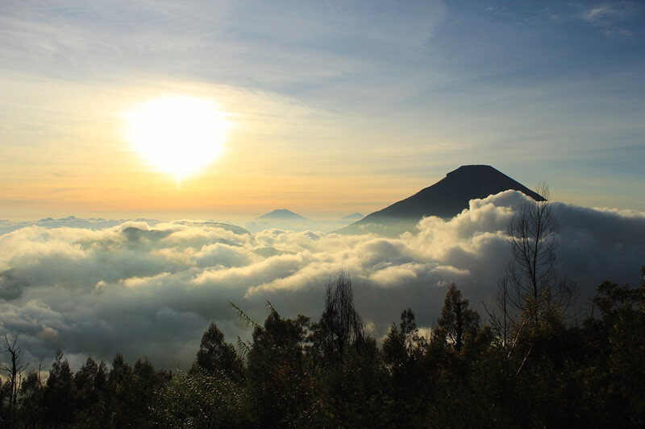
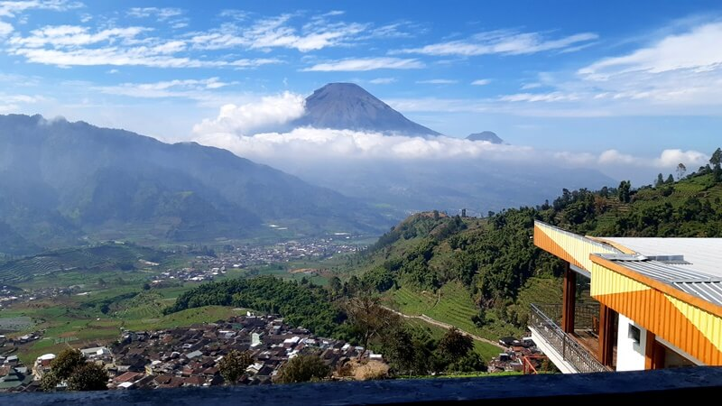
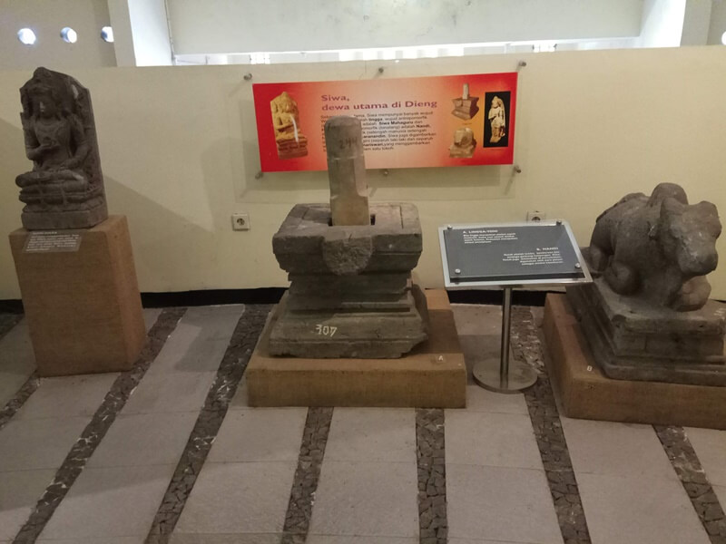

Destinasi Wisata di Dieng, Wonosobo
Tempat wisata di Dieng terkenal akan alamnya yang indah serta hawanya yang sejuk. Dataran Tinggi Dieng atau Dieng Plateau merupakan tempat terbaik untuk berwisata menikmati alam di dataran tinggi. Secara administratif Dataran Tinggi Dieng berada di dua kabupaten, yakni: Kabupaten Wonosobo, yang meliputi dataran tinggi bagian timur atau Dieng Wetan. Kabupaten Banjarnegara, meliputi bagian barat atau Dieng Kulon. Sehingga untuk menuju Dieng dapat melalui Banjarnegara, Batang, dan Wonosobo. Dimana kamu akan melalui jalur yang berlika liku dengan pemandangan yang menakjubkan.
1. Telaga Warna Dieng
Telaga Warna Dieng dapat kamu jadikan tujuan wisata pertama ketika berada di Dieng Plateau. Dimana danau ini terkenal akan warna air danaunya yang berbeda-beda. Telaga Warna Dieng terkenal akan warna telaga atau danaunya yang unik, konon katanya danaunya bisa berubah warna. Selain itu kawasan Telaga Warna Dieng dihiasi pula dengan taman yang cantik, yang dapat dijadikan sebagai area untuk berfoto.
Di Wisata Dieng Juga Terdapat Peraturan Untuk menjaga keasrian alami Telaga Warna dan kekayaan alam di dalamnya, sarana prasarana yang dibangun dan yang masih dalam tahap perencanaan mengusung konsep desain hospitality yang menyatu dengan alam, namun tetap terkesan modern. Hal ini sejalan dengan PermenLHK Nomor P.13 Tahun 2020 tentang Pembangunan Sarana dan Prasarana Wisata Alam di Kawasan Hutan. Bangunan fasilitas wisata yang telah dibangun pengelola, diantaranya beberapa villa, termasuk private villa yang menghadap langsung ke Danau Telaga Warna, café/resto, dan jalur platform/boardwalk.
- Lokasi: Desa Dieng Wetan, Kecamatan Kejajar, Wonosobo, Jawa Tengah
- Tiket masuk: Rp. 21.000,-
- Jam buka: 08.00 – 17.00 waktu setempat
2. Kawah Sikidang

Kawah Sikidang merupakan kawah aktif terbesar yang ada di Dataran Tinggi Dieng. Kawah Sikidang terbentuk dari letusan gunung berapi di kawasan Dataran Tinggi Dieng bertahun-tahun lalu dan berada di tanah yang datar, sehingga pengunjung leluasa melihat lumpur panas meletup-letup dan gas atau asap yang berwarna putih pekat mengepul di udara. Maka jangan heran jika di sekitar Kawah Sikidang dipenuhi dengan kepulan asap serta bau belerang yang cukup menyengat.
Untuk Kawah Sikidang Tidal Memiiki Undang Undang Tetapi Untuk Menjaga Keamanan Dan Kelestarian Kawah Sikidang Terdapat Pemandu Wisata Untuk mengatur Para Pengunjug Dan Menjelaskan Peraturan Yang Ada Di kawah Sikidang. Keseruan yang dapat dilakukan ketika berada di Kawah Sikidang diantaranya:
- Menyewa sepeda motor dan kuda,
- Flying fox,
- Hunting foto-foto seru
- Merebus telur.
Lokasi Kawah Sikidang juga berada di satu kawasan dengan Candi Arjuna dan Candi Semar. Jadi setelah mengunjungi Kawah Sikidang, kamu dapat berwisata sejarah di Candi Arjuna.
- Lokasi: Desa Dieng Kulon, Kecamatan Batur, Kabupaten Banjarnegara, Jawa Tengah
- Tiket masuk: Rp. 10.000,-
- Jam buka: 07.00 – 16.00
3. Bukit Sikunir Golden Sunrise

Selanjutnya ada Bukit Sikunir yang dikenal akan golden sunrisenya. di temukan oleh seorang wisatawan dari luar negeri pada era 80 an yang datang ke dieng setelah berkunjung ke Bromo. Dalam perjalanan wisatanya waktu itu juga di dampingi oleh seorang guide atau pemandu wisata lokal dieng. Dan kemudian baru pada awal tahun 2009 tempat wisata yang satu ini sudah mulai banyak di kunjungi oleh wisatawan domestik maupun asing hingga sekarang. Sesuai julukannya kamu akan menikmati cantiknya matahari bersinar ketika berada di atas puncak. Bukit ini berada di ketinggian yang cukup tinggi untuk menyaksikan Gunung Sindoro, Gunung Sumbing, Merapi hingga Merbabu. Kamu juga akan melewati Telaga Cebong, dan dapat pula mendirikan tenda di sekitarnya ataupun di puncak bukit.
- Lokasi: Desa Sambungan, Kecamatan Kejajar, Kabupaten Wonosobo, Jawa Tengah
- Jam buka: 24 jam
- Tiket masuk: Rp. 15.000,-
4. Gardu Pandang Tieng

Tempat wisata Dieng selanjutnya ialah Gardu Pandang Tieng, yang berada di ketinggian sekitar 1789 mdpl tepat berada di atas Desa Dieng. Lokasi yang satu ini merupakan favorit para wisatawan, untuk menyaksikan panorama yang sangat indah. Banyak wisatawan yang menunggu untuk menyaksikan matahari terbit dengan hiasan awan lembut, selain Bukit Sikunir. Sensasi negeri di atas awan pun dapat kamu rasakan.
- Lokasi: Jl. Dieng, Desa Tieng, Kecamatan Kejajar, Kabupaten Wonosobo, Jawa Tengah.
5. Museum Kailasa
Tempat wisata lain yang dapat kamu kunjungi ketika berada di Dieng Plateau ialah dengan mengunjungi Museum Kailasa, yakni sebuah museum yang akan memberikan informasi banyak tentang Dataran Tinggi Dieng.
Museum Kailasa terdiri dari 4 bangunan utama, yakni:
- Tempat untuk menyimpan benda-benda cagar budaya.
- Tempat untuk ruang informasi/artefak dan pemutaran film tentang Dieng
- Bangunan untuk tempat pertunjukkan dan pertemuan besar
- Dan beberapa gazebo sebagai tempat untuk beristirahat dan menyaksikan pemandangan Desa Dieng dan komplek Candi Arjuna.
Jadi, jika kamu ingin mengenal Dieng lebih dalam lagi, Museum Kailasa lah tempat yang harus kamu kunjungi.
- Lokasi: Desa Dieng Kulon, Kecamatan Batur, Kabupaten Banjarnegara, Jawa Tengah.
- Tiket masuk: Rp. 6.000,-
- Jam buka: 04.30 – 16.00